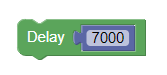

<!-- <script type="text/javascript" src="./app/Elementos/arduino_compressed.js"></script> -->


<!-- <script>
function renderContent() {
  //var arduinoTextarea = document.getElementById('content_arduino');
  console.log("el render");
  var arduinoTextarea = document.getElementById('code');
  arduinoTextarea.value = Blockly.Arduino.workspaceToCode();
  arduinoTextarea.focus();
}
</script> -->

<div class="container " >
  <div class="row">
    <div class="d-flex justify-content-around mb-2 py-3 options">
      <button class="rounded-pill p-2" (click)="cargarAyuda()"> Dudas </button>
      <button class="rounded-pill p-2" (click)="uploadClick()"> Cargar-arduino </button>
      <button class="rounded-pill p-2" (click)="resetClick()"> Limpiar lienzo</button>
      <button class="rounded-pill p-2" (click)="saveArduino()"> Guardar codigo Arduino </button>
      <button class="rounded-pill p-2" (click)="save()"> Guardar codigo xml </button>
      <div>
        <button id="fakeload"> Cargar codigo </button>
        <input (click)="cargar()" class="rounded-pill p-2"  type="file" id="load"/>
      </div>

      <div class="btn-group" role="group" aria-label="Basic radio toggle button group">
        <input (click)="radioBtn($event)" type="radio" class="btn-check" name="btnradio" id="reto" autocomplete="off" >
        <label class="btn btn-outline-primary" for="reto">Reto</label>
      
        <input (click)="radioBtn($event)" type="radio" class="btn-check" name="btnradio" id="codigo" autocomplete="off" checked>
        <label class="btn btn-outline-primary" for="codigo">Codigo</label>
      
      </div>

    </div>
    <div class="row mt-2 app-container">
      <div id="ayuda" class="" style="display: none; height:100%;">
        <h3>Recordemos</h3>
        <div style="height:90%;overflow-y: scroll;">
          
          <div>
            <p class="mt-3">Los bloques DigitalWrite sirven para poder designar a un pin especifico de la placa arduino si este va ser un pin de entrada o salida de corriente</p>
          </div>
          
          <p class="mt-3">Los bloques Delay sirven para retrasar el programa por una cantidad de tiempo en milisegundos, recordar que hay 1000 milisegundos en un segundo.</p>

        </div>
      </div>
      <div id="blocklyDiv"  class="col-9"></div>
      <textarea *ngIf="verCodigo" id="code" class="col-3"></textarea>
      <div *ngIf="verReto" class="col-3" style="height:100%;">
        <div id="reto" style="height:100%;">
          <div class="imgResultado ">
            <iframe  width="100%" height="30%" style="height:30%;" [src]="urlReto|safe" frameborder="0" allow="accelerometer; autoplay; clipboard-write; encrypted-media; gyroscope; picture-in-picture" allowfullscreen></iframe>
          </div>
          <div class="descripcion mt-3" style="height:70%;overflow-y: scroll;">
            <pre style="word-wrap: break-word;white-space: pre-wrap;" class="desborde">{{descripcionReto}}</pre>
          </div>
        </div>
      </div>
    </div>

  </div>
  
  <!-- <div class="row">
    <div id="blocklyDiv" class="col-6"></div>
    <div id="code" class="col-6">aaaaaaaa</div>
  </div> -->

</div>